Graph of Thoughts：用 LLM 求解复杂问题
论文针对 CoT、CoT-SC、ToT 等提示范式将 LLM 推理约束在链/树结构、无法自由组合中间思路的问题，提出 Graph of Thoughts（GoT）框架：把每条 LLM 思路建模为有向图中的顶点、依赖关系为边，从而支持聚合（多思路合并）、精炼（自环迭代改进）、生成等图上思路变换，并可删除无前景思路以节省上下文空间。系统采用 Prompter/Parser/Scoring/Controller 模块化架构，以静态 Graph of Operations（GoO）规定执行计划、Graph Reasoning State（GRS）维护动态推理状态，可扩展接入 GPT-3.5、GPT-4、Llama-2 等模型。在排序、集合交集、关键词计数、文档合并四类任务上，GoT 质量全面超过 IO/CoT/CoT-SC/ToT：排序质量较 ToT 提升 62% 且成本降低超 31%，较 CoT 提升约 70%；论文还提出 volume of a thought 新指标，证明 GoT 在固定成本下同时实现低延迟与高 volume。其'分解-求解-聚合'的提示编排模式与 GoO/GRS 架构划分对团队设计复杂任务的提示流程有直接借鉴价值。
现有提示范式（IO、CoT、CoT-SC、ToT）把 LLM 推理过程限制在单链、多链或树的固定结构上，无法表达'回溯后将不同推理链中的思路合并成新解'等更复杂的推理模式，限制了提示方案在可分解复杂任务上的质量与成本表现。
将 LLM 推理过程建模为任意有向图：思路为顶点、依赖为边，支持三类图变换——聚合（多个思路/推理链合并为一个新思路）、精炼（自环迭代改进）、生成（由单思路派生新思路），并允许显式删除顶点/边以节省上下文空间；配合评分函数 E 与排序函数 R 选择思路。系统架构包含 Prompter、Parser、Scoring、Controller 四个模块，Controller 内含静态执行计划 Graph of Operations（GoO）与动态推理状态 Graph Reasoning State（GRS），提供可扩展 API 并支持接入不同 LLM。
排序任务（P=128）中位误差较 ToT 降低约 62%，同时成本降低超过 31%
排序质量较 CoT 与 ToT 分别提升约 70% 与约 62%
排序 P=64 时，GoT 中位误差较 CoT 低约 65%、较 IO 低约 83%（但 GoT/ToT 成本显著高于 IO 与 CoT）
优势随问题规模扩大：P=32 时对 ToT2 提升微小，P=64 时中位误差低约 61%，P=128 时低约 69%
理论分析：各方案固定总成本 Θ(n) 时，GoT 是唯一同时达到低延迟 log_k N 与高 volume N 的提示方案
提出新评测指标 volume of a thought，并论证 GoT 通过聚合变换使思路具备显著更大的 volume
首次将提示方案中的思路结构从链/树推广到任意图，是唯一支持任意图上思路变换（尤其是聚合）的提示范式，统一涵盖 IO/CoT/CoT-SC/ToT 的能力；同时提出 volume of a thought 指标与 latency-volume 权衡分析，为提示工程提供更原则化的评估手段。
相关度级别：high
命中能力域：3.2 提示工程 | 3.3 Agent 架构与工具使用 | 3.5 评测与可靠使用
理由：直接命中 3.2 提示工程：GoT 是 CoT/ToT 谱系中推理提示范式的代表作，给出了图结构思路变换（聚合/精炼/生成）与完整可扩展的系统设计。同时命中 3.3 中的规划与反思要素（GoO 静态规划、Improve 精炼循环、自评估分选择思路）与 3.5 中的成本效率与评测方法（成本降低 >31%、latency-volume 权衡、volume 指标）。团队不训练模型、专注'用好模型'，此类推理结构设计与提示编排方法属于核心技术栈参考。
建议动作：深入精读并做内部分享
arXiv:2308.09687v4 [cs.CL] 6 Feb 2024
思维图（Graph of Thoughts）：利用大语言模型求解复杂问题
Maciej Besta 1 * , Nils Blach 1 * , Ales Kubicek 1 , Robert Gerstenberger 1 ,
Michał Podstawski 2 , Lukas Gianinazzi 1 , Joanna Gajda 3 , Tomasz Lehmann 3 , Hubert Niewiadomski 3 , Piotr Nyczyk 3 , Torsten Hoefler 1
1 苏黎世联邦理工学院，2 华沙工业大学，3 Cledar
bestam@inf.ethz.ch, nils.blach@inf.ethz.ch, htor@inf.ethz.ch
我们提出图思维（Graph of Thoughts, GoT）：一个将大语言模型（LLM）的提示能力提升至超越思维链（Chain-of-Thought, CoT）或思维树（Tree of Thoughts, ToT）等范式所提供能力的框架。GoT 的核心思想与主要优势在于，能够将 LLM 生成的信息建模为任意图，其中信息单元（“LLM 思维”）作为顶点，而边则对应这些顶点之间的依赖关系。这种方法能够将任意 LLM 思维组合为协同增效的结果，提炼整个思维网络的精髓，或利用反馈循环来增强思维。我们展示了 GoT 在不同任务上相对于当前最先进方法的优势，例如相比 ToT 将排序质量提升 62%，同时将成本降低超过 31%。我们确保 GoT 可通过新的思维变换进行扩展，因而可用于引领新的提示方案。这项工作使 LLM 推理更接近人类思维或诸如循环（recurrence）这样的大脑机制，而这两者均构成复杂的网络。
网站与代码：https://github.com/spcl/graph-of-thoughts
大语言模型（LLM）正在席卷人工智能（AI）领域。近年来，主要基于仅解码器（decoder-only）Transformer 变体 [65] 的模型得到了迅速发展，例如 GPT [13, 14, 53, 54]、PaLM [19] 或 LLaMA [63]。
提示工程是一种解决各类 LLM 任务的资源高效方法。简而言之，就是将任务描述包含在发送给 LLM 的输入之中。如果这一描述表述得当，LLM 便会利用其基于词元（token）的自回归文本生成机制来求解该任务。此类提示可以包含带有解答的示例任务（少样本提示（few-shot prompting），也称为上下文学习（in-context learning，ICL）），甚至可以完全不包含示例任务（零样本提示（zero-shot prompting））。近年来已有研究表明，这种机制可用于解决涉及数学推理、常识推理或符号推理的广泛任务。
思维链（Chain-of-Thought, CoT）[71] 是一种提示方法，其中除了任务的输入/输出之外，还将推理的中间步骤（中间“思维”）包含在提示内。已有研究表明，CoT 能够显著提升 LLM 解决问题的能力，而无需对模型进行任何更新。CoT 的一个重要改进是带自洽性的思维链（Self-Consistency with CoT, CoT-SC）[67]，该方案先生成多个 CoT，然后从中选出最佳者作为结果。最近，CoT 和 CoT-SC 又被扩展为思维树（Tree of Thoughts, ToT）[43, 75, 77]，后者用树结构对 LLM 的推理过程进行建模。这便于使用不同的思维路径，并提供了诸如从无前景的结果进行回溯等新颖能力。遗憾的是，ToT 方法通过在思维过程上强加僵化的树结构，仍然从根本上限制了单个提示内的推理能力。
* 同等贡献
在本工作中，我们主张，通过让 LLM 的思维形成任意的图结构，可以实现从根本上更强大的提示。这一思路的动机来自诸多现象，例如人类推理、大脑结构或算法执行。在构思一个新想法时，人不仅会遵循一条思维链（如 CoT 中那样）或尝试若干条彼此独立的思维链（如 ToT 中那样），而是实际上会形成一个更为复杂的思维网络。例如，人们可以探索某条推理链，然后回溯并开始一条新的推理链，随后意识到前一条链中的某个想法可以与当前正在探索的想法相结合，于是将两者合并为一个新方案，取其所长、去其所短。类似地，大脑会形成复杂的网络，其中包含诸如循环（recurrence）[28] 这样的类图模式。算法的执行同样呈现出网络化模式，通常用有向无环图（Directed Acyclic Graph）来表示。将这些基于图的变换应用于 LLM 思维时，有望带来更强大的提示，但它们无法用 CoT 或 ToT 自然地表达。
We observe that these (and many other) thought transformations can be naturally enabled when modeling the reasoning process of an LLM as a graph . For this, we propose Graph of Thoughts (GoT), an approach that enhances LLMs' capabilities through networked reasoning ( contribution #1 ). In GoT, an LLM thought is modeled as a vertex, while an edge is a dependency between such thoughts. Using GoT, one can aggregate arbitrary thoughts by constructing vertices that have more than one incoming edge. Overall, the graph abstraction harnessed by GoT seamlessly generalizes CoT and ToT to more complex thought patterns, without resorting to any model updates .
Yet, putting GoT to practice requires solving several design challenges. For example, what is the best graph structure for different tasks? How to best aggregate thoughts to maximize accuracy and minimize cost? To answer these and many other questions, we carefully design a modular architecture for implementing GoT ( contribution #2 ), coming with two design highlights. First, we enable a fi ne-grained control over individual thoughts . This enables us to fully control the ongoing conversation with the LLM, and apply advanced thought transformations, such as combining most promising thoughts from the ongoing reasoning into a new one. Second, we ensure that our architecture can be seamlessly extended with novel thought transformations, patterns of reasoning (i.e., graphs of thoughts), and LLM models. This enables rapid prototyping of novel prompting ideas using GoT, while experimenting with different models such as GPT-3.5, GPT-4, or Llama-2 [64].
We illustrate several use cases for GoT (sorting, keyword counting for summaries, set operations, document merging) and we detail how to implement them using the graph-based paradigm ( contribution #3 ). We evaluate GoT and show its advantages over the state of the art ( contribution #4 ). Overall, we observe that GoT is particularly well-suited for tasks that can be naturally decomposed into smaller subtasks that are solved individually and then merged for a final solution. Here, GoT outperforms other schemes, for example improving upon CoT and ToT by, respectively, ≈ 70% and ≈ 62%, in terms of the quality of sorting, while simultaneously reducing costs by > 31% over ToT.
We qualitatively compare GoT to other prompting schemes 1 in Table 1. GoT is the only one to enable arbitrary graph-based thought transformations within a prompt, such as aggregation, embracing all previously proposed schemes.
| Scheme | Sc? | Mc? | Tr? | Ag? |
|---|---|---|---|---|
| Chain-of-Thought (CoT) [71] | 540 | remove | remove | remove |
| Self-Consistency with CoT [67] | 540 | 540 | remove | remove |
| Thought decomposition [75] | 540 | 540 | 542 | remove |
| Tree-of-Thought (ToT) [43] | 540 | 540 | 540 | remove |
| Tree of Thoughts (ToT) [77] | 540 | 540 | 540 | remove |
| Graph of Thoughts (GoT) | 540 | 540 | 540 | 540 |
| Scheme | Sc? | Mc? | Tr? | Ag? |
最后，我们提出了一种用于评估提示策略的新指标——思维体积（volume of a thought）（贡献 #5）。借助该指标，我们旨在更好地理解各提示方案之间的差异。对于给定的思维 v，v 的体积是指能够通过有向边到达 v 的 LLM 思维的数量。直观地说，这些就是所有曾有潜力对 v 做出贡献的 LLM 思维。我们表明，GoT 通过引入聚合等思维变换，使思维能够拥有比其他方案从根本上更大的体积。
1 请注意，我们并未纳入一个名为 Graph-ofThought [79] 的近期方案，因为它并不是一种提示方案。尽管其名称暗示它与 ToT 和 CoT 密切相关，但作为一种微调方案，它依赖于模型更新，因此超出了本工作的关注范围。类似地，graph-of-thoughts 代码库 [52] 并不支持通用的基于图的推理，而是利用了结合 BFS 的 ToT。
我们首先概述背景概念与符号。
与大语言模型（LLM）的对话由用户消息（提示）和 LLM 回复（思维）组成。我们沿用已有的记号 [77]，将参数为 θ 的预训练语言模型（LM）记为 p θ。诸如 x、y、z、... 的小写字母表示 LLM 的思维。我们有意识地不对单个“思维”是什么作出规定，而是使其取决于具体用例。因此，单个思维可以是一个段落（例如在文章摘要中）、一个文档（例如在文档生成中）、一段代码（例如在代码调试或优化中），等等。
接下来我们描述具体的提示方法。
输入-输出（IO） 输入-输出（IO）提示是一种直接的方法，其中我们使用 LLM 将输入序列 x 直接转换为输出 y，而不需要任何中间思维。
思维链（CoT） 其次，在思维链（CoT）中，人们在 x 和 y 之间引入中间思维 a 1 , a 2 , ...。已有研究表明，相较于朴素的 IO 基线，该策略能显著提升各种 LM 任务，例如数学谜题 [71] 或一般数学推理 [24]。
多个思维链 第三，可以通过生成若干个（相互独立的）k 个思维链，并返回其中输出最优的一个（依据某种预先规定的评分度量），将 CoT 推广为多个思维链。该方法由 Wang 等人在称为 Self-Consistency with CoT（CoTSC）的方案中提出 [67]。这一方法增强了 CoT，因为它提供了探索不同推理路径的机会。然而，它并不提供路径内的“局部探索”，例如回溯。
思维树（ToT） 最后，思维树（ToT）方案由 Yao [77] 和 Long [43] 独立提出（其中它被称为 Tree-of-Thought）；其他方案（如思维分解 [75]）也在一定程度上隐式地使用了它。它通过将推理过程建模为思维树来增强 CoT-SC。单个树节点表示一个部分解。基于给定节点，思维生成器构造出给定数量 k 的新节点。然后，状态评估器为每个这样的新节点生成分数。根据用例的不同，评估既可以由 LLM 本身完成，也可以利用人类评分。最后，扩展树的调度由所采用的搜索算法决定（例如 BFS 或 DFS）。
我们现在详细介绍 GoT 框架。我们在图 1 中对其进行展示，并将其与其他提示策略进行比较。
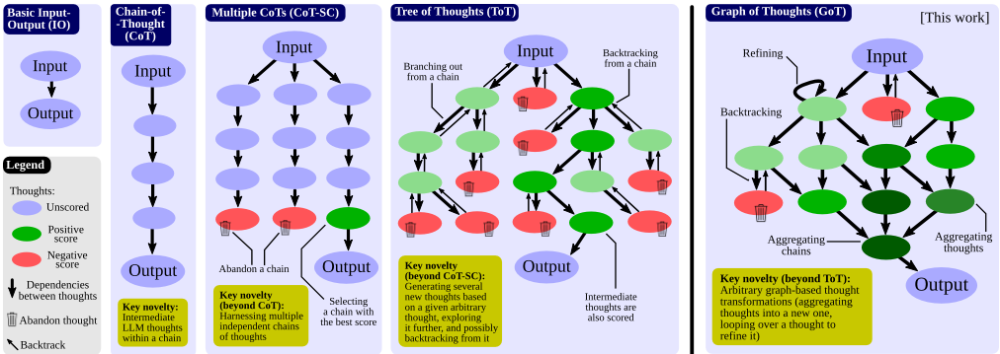
形式化地，GoT 可以建模为一个元组 (G, T, E, R)，其中 G 是“LLM 推理过程”（即上下文中的所有 LLM 思维及其相互关系），T 是可能的思维变换，E 是用于获取思维评分的评估函数，R 是用于选择最相关思维的排序函数。
我们将推理过程建模为有向图 G = ( V, E )，其中 V 是顶点的集合，E ⊆ V × V 是边的集合。G 是有向的，因此边是有序顶点对的子集 E ⊆ V × V。一个顶点包含针对当前问题的一个解（无论是初始解、中间解还是最终解）。这种思维的具体形式取决于用例；它可以是一个段落（在写作任务中）或一个数字序列（在排序中）。有向边 ( t 1 , t 2 ) 表示思维 t 2 是以 t 1 作为“直接输入”构建而成的，即通过明确指示 LLM 使用 t 1 来生成 t 2。
在某些用例中，图节点属于不同的类别。例如，在写作任务中，一些顶点对撰写段落的计划进行建模，而另一些顶点则对实际的文本段落进行建模。在这种情况下，GoT 采用异构图 G = ( V, E, c ) 来对 LLM 推理进行建模，其中 c 将顶点 V 映射到它们各自的类别 C（在上述例子中，即为 C = { plan, par } ）。因此，任意顶点 v 都可以对推理的不同方面进行建模。
我们将 G 与 LLM 推理过程相关联。为了推进这一过程，需要对 G 应用思维变换。这类变换的一个例子是将（迄今为止）得分最高的思维合并为一个新的思维。另一个例子是对某个思维进行循环，以对其进行增强。请注意，这些变换严格扩展了 CoT、CoT-SC 或 ToT 中可用的变换集合。
得益于基于图的推理模型，GoT 能够实现新颖的思维变换。我们将其称为
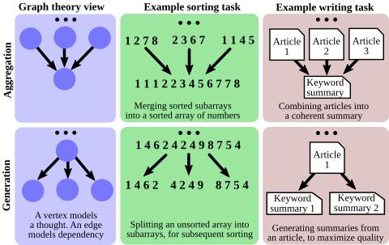
图赋能变换（graph-enabled transformations）。例如，在写作中，可以将多篇输入文章合并为一篇连贯的摘要；在排序中，可以将多个已排序的数字子数组合并为最终的有序数组。我们在图 2 中展示了聚合与生成的示例。
形式化地，每种这样的变换都可以建模为 T ( G, p θ )，其中 G = ( V, E ) 是反映推理当前状态的图，p θ 是所使用的大语言模型（LLM）。T 通常通过添加新顶点及其入边来修改 G。我们有 G ′ = T ( G, p θ ) = ( V ′ , E ′ )，其中 V ′ = ( V ∪ V + ) \ V - ，E ′ = ( E ∪ E + ) \ E - 。V + 和 E + 分别是插入 G 的新顶点和新边，用于建模新的思维及其依赖关系。为了最大化 GoT 的表达能力，我们还支持用户显式地移除思维，即指定要移除的相应顶点和边（分别为 V - 和 E - ）。此处，确保集合 V + 、E + 、V - 和 E - 所对应的变换保持一致（即，例如，用户不会试图移除一个并不存在的顶点）是用户自身的责任。这使得我们能够无缝地纳入这样一类方案：为了节省上下文中的空间，可以移除那些无望带来改进的推理部分。
T 的具体形式及其对 G 的影响取决于具体的变换。我们首先详细介绍主要的图赋能思维变换，然后描述 GoT 如何吸纳来自早期方案的变换。除非另有说明，V - = E - = ∅ 。
聚合变换 首先，借助 GoT，可以将任意思维聚合为新的思维，从而结合并强化这些思维的优势，同时消除其劣势。在仅创建一个新顶点的基本形式中，V + = { v + }，E + = { ( v 1 , v + ) , ..., ( v k , v + ) }，其中 v 1 , ..., v k 是被合并的 k 个思维。更一般地，这使得我们不仅可以聚合单个思维，还可以聚合推理路径（reasoning paths），即更长的思维链。在图模型下，这只需添加从顶点 v 1 , ..., v k 出发、指向组合这些链的单一思维 v + 的出边即可实现，其中 v 1 , ..., v k 建模的是若干条链中的最终思维。
精炼变换 另一种思维变换是对当前思维 v 进行精炼，即通过修改其内容来实现：V + = {}，E + = { ( v, v ) }。图中的这个环表示一个被迭代的思维，其连接与原始思维相同。
生成变换 最后，可以基于现有的单个思维 v 生成一个或多个新思维。这一类变换涵盖了来自早期方案（如 ToT 或 CoT-SC）的类似推理步骤。形式化地，我们有 V + = { v + 1 , ..., v + k }，E + = { ( v, v + 1 ) , ..., ( v, v + k ) }。
对思维进行评分是为了判断当前解决方案是否足够好。评分被建模为一个通用函数 E ( v, G, p θ ) ，其中 v 是待评估的思维。为了实现最大的通用性，我们在 E 中使用整个推理过程的状态（ G ），因为——举例来说——在某些评估场景中，评分可能是相对于其他思维而言的。
GoT 还可以对思维进行排序。我们用函数 R ( G,p θ , h ) 对此进行建模，其中 h 指定 R 要返回的 G 中排名最高的思维的数量。虽然 R 的具体形式取决于使用场景，但我们最常采用一种简单而有效的策略，即返回得分最高的 h 个思维，即 v 1 , ..., v h = R ( G,p θ , h ) 。
E 和 R 的具体形式取决于使用场景。我们将在第 5 节中讨论相关细节。例如，排序任务的评分（或排名）对应于被正确排序的元素数量（当使用错误作为评分时，则对应被错误排序的元素数量）。
思维图（GoT）架构由一组相互交互的模块组成，参见图 3（蓝色部分）。这些模块包括：提示器（Prompter），负责为大语言模型（LLM）准备消息；解析器（Parser），从 LLM 思维中提取信息；评分模块（Scoring module），对 LLM 思维进行验证与评分；以及控制器（Controller），负责协调整个推理过程并决定如何推进该过程。控制器还包含另外两个重要元素：操作图（Graph of Operations，GoO）与图推理状态（Graph Reasoning State，GRS）。GoO 是一种静态结构，它规定了给定任务的图分解方式，即规定了将要应用于 LLM 思维的变换，以及这些变换的顺序与依赖关系。GRS 是一种动态结构，用于维护正在进行的 LLM 推理过程的状态（即其思维的历史以及各思维的状态）。
提示器（Prompter）负责准备将要发送给 LLM 的提示词。该模块负责在提示词中对图结构进行编码的具体细节。GoT 架构通过提供对图结构的完全访问权限，使用户能够实现针对特定用例的图编码。
解析器（Parser）从 LLM 的思维中提取信息。对于每个这样的思维，解析器会构建思维状态（thought state），其中包含所提取的信息。随后，思维状态被用于相应地更新 GRS。
在此，我们验证给定的 LLM 思维是否满足可能的正确性条件，然后为其分配一个分数。根据分数的推导方式，该模块可能会咨询 LLM。此外，根据用例的不同，分数也可以由人类来分配。最后，诸如排序之类的用例则使用简单的局部评分函数。
控制器（Controller）实现了一种特定的策略，用于从其 GRS 结构中选择思维。它还选择应将哪些变换应用于哪些思维，然后将该信息传递给提示器（Prompter）。此外，它还决定是应当终结整个过程，还是应当启动与 LLM 的下一轮交互。在我们当前的设计中，这些决策由 GoO 中所指定的执行计划来决定。
用户构建一个 GoO 实例，该实例规定了思维操作的执行计划。GoO 是一种静态结构，在执行开始之前仅构建一次。每个操作对象都知道其前驱操作和后继操作。随后，在执行过程中，GRS 的一个实例会维护关于 LLM 推理过程的持续更新的信息。这包括到目前为止已执行了哪个操作、所有已生成的 LLM 思维的状态、它们的有效性和评分，以及任何其他相关信息。
上述元素提供了可扩展的 API，使得各种提示方案能够以直接的方式实现。这些 API 在图 3 的绿色部分中进行了概述，并在文档中作了详细说明。我们还在图 3 的红色部分中提供了这些操作所使用的提示示例以及相应的 GRS。
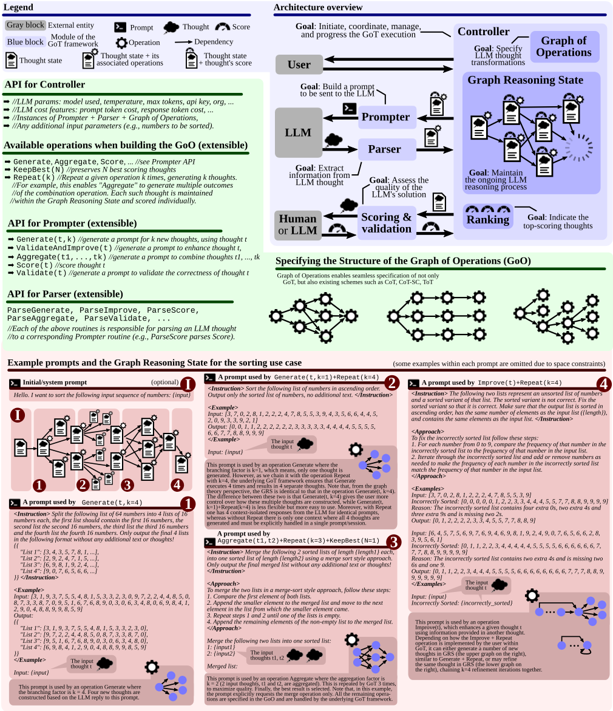
现在我们描述 GoT 的几个用例。我们详细介绍其中一个用例（排序），并对其余用例加以概述。
此外，我们还考虑了集合运算，重点关注集合交集。它们（尤其是集合交集）在从基因组或文档比较到模式匹配等众多问题中有着广泛的应用 [9-11, 20, 27, 38, 50,
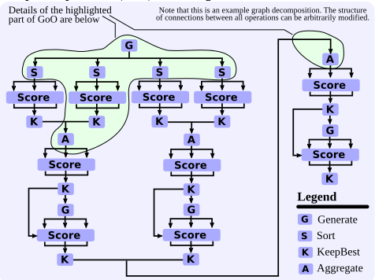
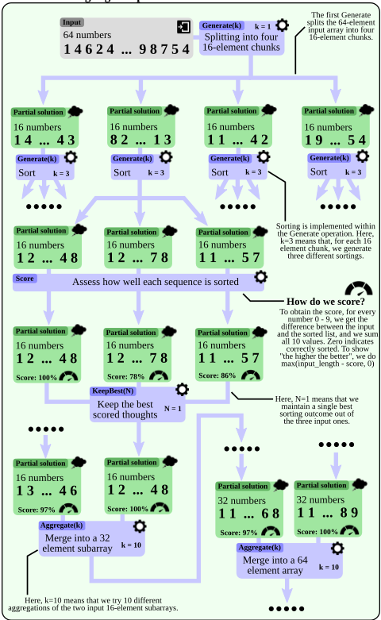
58]。两个集合的交集以与排序类似的方式实现。第二个输入集合被拆分为若干子集，并借助大语言模型（LLM）确定这些子集与第一个输入集合的交集。随后，将所得的各个交集集合聚合起来以得到最终结果。在评估中，我们使用 32、64 和 128 个元素等不同的集合大小，并将两个集合中共同出现的元素数量在 25% 至 75% 之间变化。
我们的分数表示最终交集中缺失或被错误包含的元素总数。具体而言，设两个输入集合为 A = [ a 1 , a 2 , ..., a n ] 和 B = [ b 1 , b 2 , ..., b n ] ，输出集合为 C = [ c 1 , c 2 , ..., c m ] 。那么，
其中，X 1 = | C \ ( A ∩ B ) | 表示 C 中不应存在的元素数量，X 2 = | ( A ∩ B ) \ C | 表示 C 中缺失的元素数量，X d 表示 C 中重复元素的数量（因为 LLM 以自然语言列表的形式表达集合）。最后，为了使用一个描述“正确计算”元素范围的“正分数”，可以使用数值 max( n - error-scope , 0) 。
关键词计数（keyword counting）用于在输入文本中查找给定类别（在我们的示例实现中为国家）关键词的出现频率。GoT 将输入文本切分为多个段落，统计每个段落中的关键词数量，并对子结果进行聚合。段落的数量是可配置的，也可以交由 LLM 决定，从而可以将每个句子视为一个独立的段落。在此，为了对一个思维（thought）进行评分，我们首先针对每个关键词计算所得计数与正确计数之间的绝对差值。然后，我们将所有这些差值求和，得到最终分数。
最后，我们还提供了文档合并（document merging）任务。该任务的目标是基于若干在内容上部分重叠的输入文档，生成一份新的保密协议（NDA）文档。其目标是在最大化信息保留的同时，确保重复内容最少。文档合并具有广泛的适用性，例如在法律程序中，需要将多个信息来源合并为单一文档或文章。为了对一个解进行评分，我们向 LLM 查询两个数值（每个数值查询 3 次并取平均值）。第一个数值对应解的冗余度（10 表示没有冗余，0 意味着至少有一半信息是冗余的），第二个数值代表信息保留度（10 表示所有信息均被保留，0 表示没有任何信息被保留）。我们计算这两个数值的调和平均数。
我们现在证明，GoT 在延迟（在思维图中到达给定最终思维所需的跳数）与体量（volume）之间的权衡方面优于以往的提示方案。针对给定思维 t，我们将体量定义为可能对 t 产生影响的前序 LLM 思维的数量。形式化地说，t 的体量是指在思维图中存在通往 t 的路径的思维数量。我们假设输出单个思维的时间代价为 O(1)，并将每种提示方案的总代价固定为 Θ(n)。
各方案的结构如下。CoT-SC 由源自单一起始思维的 k 条独立链构成。ToT 是一棵完全 k 叉树。最后，在 GoT 中，一棵完全 k 叉树在其叶节点处与一棵规模相同但边方向相反的“镜像” k 叉树相连接。
详细分析见表 2。CoT 可提供高达 N 的大体量，但代价是高达 N 的高延迟。CoTSC 将延迟降低为原来的 1/k（对应其分支因子），但同时也使体量减少为原来的 1/k。ToT 可提供 log k N 的延迟，但体量同样较低。GoT 是唯一同时具备 log k N 的低延迟与 N 的高体量的方案。这得益于 GoT 对思维聚合的运用，使得在图分解中能够从任何其他中间思维到达最终思维。
| Scheme | Latency | Volume |
|---|---|---|
| Chain-of-Thought (CoT) | N | N |
| Self-Consistency with CoT (CoT-SC) | N/k | N/k |
| Tree of Thoughts (ToT) | log k N | O (log k N ) |
| Graph of Thoughts (GoT) | log k N | N |
| Scheme | Latency | Volume |
我们对每个任务和对比基线均使用 100 个输入样本。除非另有说明，我们将温度设为 1.0，并使用 4k 的上下文大小。对于每个实验，我们都固定各方案中思维（thought）的数量，以使每个实验的成本相近。
参数 我们对分支因子 k 和层数 L 进行了大量实验，以确保我们将思维图（GoT）与具有成本效益且占优的配置进行比较。我们绘制了思维树（ToT）的两种变体：一种具有较高的 k 和较低的深度（ToT），另一种具有较低的 k 但较高的 L（ToT2）。我们通常力求在更稀疏的生成轮次（较低的 k）与更多轮次（较大的 L）之间的权衡中达到最佳平衡点。通常，每轮响应数越多，成本越高（例如，图 7 中总响应数为 80 vs. 60，但成本为 $6 vs. $3）。我们还尝试了不同的问题规模 P（例如，在排序中，P 表示待排序数字的数量）。
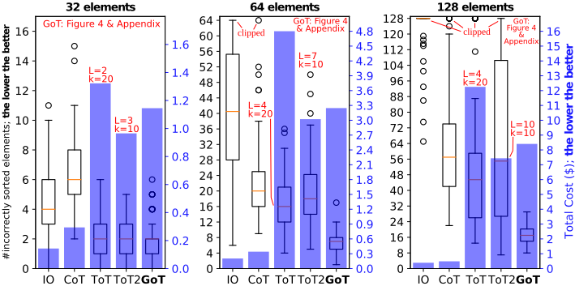
所使用的大语言模型（LLM） 由于预算限制，我们聚焦于 GPT3.5。我们还对 Llama-2 进行了实验，但其表现通常不如 GPT-3.5，且运行速度慢得多，使得获取足够样本变得不可行。
分析结果如图 5（排序）、图 6（集合交集）、图 7（关键词计数）和图 8（文档合并）所示；具体用例的描述参见第 5 节。总体而言，GoT 在所有考虑的基线方法上都提升了结果质量，并且与 ToT 相比降低了推理成本。
GoT 与 ToT 的对比 在所有考虑的问题实例上，GoT 都以较大幅度优于 ToT 和 ToT2。ToT 的质量通常略高于 ToT2，但成本同时也高得多。GoT 的成本始终低于 ToT，而与 ToT2 相当（某些情况下更低，某些情况下更高）。例如，在 P = 128 时，与 ToT 相比，GoT 将中位误差降低了 ≈ 62%，从而实现更高的排序质量，同时确保成本降低 > 31%。这些优势源于 GoT 能够将复杂任务分解为更简单的子任务、独立求解这些子任务，然后将这些结果逐步合并为最终结果的能力。
GoT 与 IO 和思维链（CoT）的对比 GoT 始终能提供比 IO/CoT 高得多的结果质量。例如，对于排序（P = 64），GoT 的中位误差分别比 CoT 和 IO 低 ≈ 65% 和 ≈ 83%。然而，GoT 和 ToT 的成本远高于 IO 和 CoT。这主要归因于我们对 CoT 的配置方式：如果无助于改善结果，我们便不会人为地加长推理链的长度。GoT 和 ToT 较高的成本源于为每个 Generate 操作构建的 k 个新思维；这些多重思维正是 GoT 在质量上占优的原因之一。
所解决问题复杂性的提升 最重要的是，随着问题规模 P 的增大，GoT 相对于所有基线方法的质量优势也在不断增强。例如，在排序中，当 P = 32 时 GoT 相比 ToT2 的改进微乎其微，而在 P = 64 和 P = 128 时，其中位误差计数分别降低 ≈ 61% 和 ≈ 69%。四分位数也相应地变得更好。其他方案的结果也符合直觉；例如，随着 P 的增大，IO 的表现持续变差，这在预料之中，因为单个思维不太可能解决大规模的问题实例。总体而言，这一分析表明 GoT 确实非常适合处理复杂问题场景，因为随着问题规模的增大，执行调度通常会变得更加复杂。
将任务拆分为子任务然后求解这些子任务时，响应和输入（以 token 计）的大小会按任务分解的程度成比例减小。然而，提示的“静态”部分（即少样本示例）可能成为显著的开销（参见图 7 中 GoT4 到 GoT8）。在此，我们观察到这些少样本示例通常也可以缩小规模（例如，用于演示关键词计数的段落也可以做得更小，同时仍能反映实际输入大小），从而积极致力于降低成本（例如，参见图 7 中 GoT8 与 GoTx 之间的差异）。
进行图分解时的总体目标是将任务分解到这样的程度：LLM 在大多数情况下可以仅用单个提示（或加上少量额外的改进步骤）就正确求解该任务。这显著减少了在图探索后期所需的改进/细化步骤数量。此外，正如我们的结果所表明的，合并或拼接子结果通常比从头求解大型任务实例更容易。因此，LLM 在聚合最终解决方案时通常能取得成功。
我们总结了 GoT 与相关工作之间的关系。
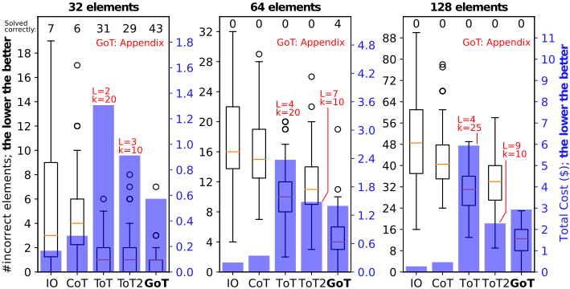
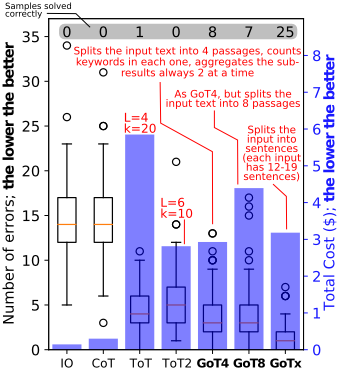
We detail different prompting paradigms in Section 1 and Table 1. There are numerous other works related to prompting. We now briefly summarize selected most related ones; more extensive descriptions can be found in dedicated surveys [34, 40, 69, 70]. Wang et al. proposed Plan-andSolve, an approach to enhance CoT with an explicit planning stage [66]. Using complexity-based criteria to enhance prompting within a CoT was designed by Fu et al. [29, 67]. The self-taught reasoner (STaR) [80] generates several chain of thoughts, and selects the ones that are valid. Similarly, a scheme by Shum et al. [61] generates a pool of CoT candidates, and selects the best candidate based on whether the candidates match the ground truth and on a policy gradientbased method. Automatic prompt generation overcomes the issues of scaling in CoT [41, 42, 59]. Zhou et al. propose to harness selecting the best prompt out of a candidate set [84]. Skeleon-of-Thought [47] generates at first a number of skeleton answers (brief bullet points of 3 to 5 words) and expands on these points in parallel in a second step.
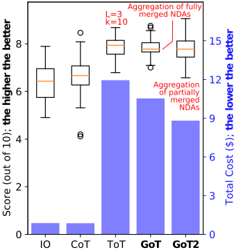
Finally, in prompt chaining, one cascades different LLMs. This enables prompting different LLMs via different contexts, enabling more powerful reasoning [21, 23, 48, 51, 72, 73, 73]. GoT is orthogonal to this class of schemes, as it focuses on a single context capabilities.
自我反思与自我评估是近期才被引入的技术 [45, 49, 60, 75, 85]。它们被用于增强不同的任务，例如代码生成 [17] 或计算机操作任务 [39]。在 GoT 中，我们在决定如何在提示内扩展思维图时，部分依赖于自我评估。
近来有许多工作研究如何利用 LLM 规划复杂任务 [36, 37, 68, 76, 78, 81]。GoT 可以被视为一种通用框架，它通过提供一种用于生成复杂的基于图的规划的范式，有望被用于增强此类方案。
图已成为通用计算领域中极为流行且重要的组成部分 [31, 32, 44, 46, 56]。近来，图数据库 [2-4, 7, 55]、图模式匹配 [8, 10, 11, 18, 25, 62]、图流处理 [1, 22, 26]，以及图机器学习与图神经网络 [5, 6, 12, 16, 30, 33, 33, 57, 74, 82, 83] 等领域日益受到关注。图抽象在许多现代研究领域中都卓有成效，例如社会科学（如研究人类交互）、生物信息学（如分析蛋白质结构）、化学（如设计化合物）、医学（如药物发现）、网络安全（如识别入侵机器）、医疗保健（如揭露提交欺诈性报销申请的群体）、Web 图分析（如提供精准的搜索服务）、娱乐服务（如预测电影流行度）、语言学（如建模词语之间的关系）、交通运输（如寻找高效路线）、物理学（如理解相变与临界现象）等众多领域 [15, 20, 35, 38, 44]。在本工作中，我们利用图抽象作为增强 LLM 提示能力的关键机制。
提示工程是大语言模型（LLM）研究的核心新兴领域之一。它使得无需任何模型更新即可高效使用 LLM。然而，设计有效的提示是一项具有挑战性的任务。
在本工作中，我们提出了思维图（Graph of Thoughts, GoT），这是一种新范式，使 LLM 无需任何模型更新即可有效解决不同任务。其核心思想是将 LLM 的推理建模为任意图，其中思维是顶点，思维之间的依赖关系是边。这使得对思维进行新颖的变换成为可能，例如聚合。人类的任务求解通常是非线性的，它涉及将中间解组合成最终解，或者在发现新见解时改变推理流程。GoT 通过其图结构反映了这一点。
GoT 优于其他提示方案，例如在排序任务的质量上相比 ToT 提升了 62%，同时将成本降低了超过 31%。我们还为提示方案提出了一种新度量指标——思维量（volume of a thought），用于指示给定 LLM 输出所能携带的信息范围，GoT 在该指标上同样表现出色。这为更具原则性的提示工程迈出了一步。
在过去几十年中，图抽象一直是计算与人工智能领域若干成功设计的基础，例如用于蛋白质预测的 AlphaFold。我们的工作在提示工程领域利用了这一抽象。
下图分别绘制了与图 5 和图 6 相同的数据，但采用了 5.1 节和 5.2 节中所述的“正分数”（positive score）。
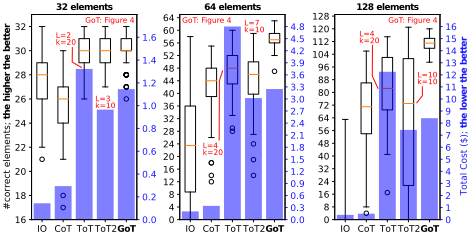
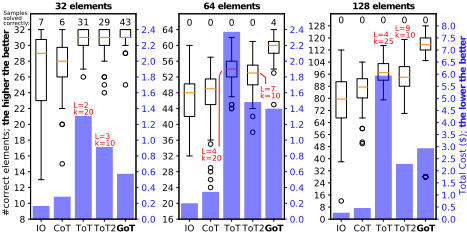
我们仅给出对 32 元素列表进行排序的提示，因为 64 元素和 128 元素列表的提示与之完全相同，唯一的例外是 split 提示，其中单样本（one-shot）示例中的元素数量与问题规模相匹配。
在排序任务中，我们采用三种不同类型的与大语言模型（LLM）交互的操作，每种操作都有其对应的提示。首先是 Generate 操作，它利用 sort 提示引导 LLM 对给定的数值列表进行排序，并利用 split 提示指示 LLM 将指定列表拆分为指定数量的子列表。接下来是 Improve 操作，它使用 improve 提示指示 LLM 在检测到错误时对已排序的列表进行修正。最后，Aggregate 操作利用 merge 提示引导 LLM 将两个已预先排序的列表合并为一个有序列表。
首先，我们给出提示存根（prompt stub）（表 3），它们作为模板，用于在运行时动态生成合适的提示。为清晰起见，我们在表 4 中单独展示与之对应的少样本（few-shot）示例。随后，我们概述在解决排序用例的整个过程中与 LLM 的交互（表 5 - 表 9）。
表 3：用于排序任务的提示存根；单层花括号中的参数将在运行时被替换。
sort 提示：< Instruction > 将以下数字列表按升序排序。仅输出排序后的数字列表，不要有任何额外文本。< /Instruction >
输入：{ input list }
split 提示（32 个元素）：< Instruction > 将以下由 32 个数字组成的列表拆分为 2 个各含 16 个数字的列表，第一个列表应包含前 16 个数字，第二个列表包含后 16 个数字。
仅按以下格式输出最终的 2 个列表，不要有任何额外的文本或想法！：{{ "List 1": [3, 4, 3, 5, 7, 8, 1, ...], "List 2": [2, 9, 2, 4, 7, 1, 5, ...] }} < /Instruction > < Examples > 参见表 4 < /Examples > 输入：{ input list }
improve 提示：< Instruction > 以下两个列表分别表示一个未排序的数字列表以及该列表的一个已排序变体。该已排序变体是不正确的。请修正该已排序变体，使其正确。确保输出列表按升序排序、与输入列表具有相同的元素数量（{ length }），并且包含与输入列表相同的元素。< /Instruction >
merge 提示：< Instruction > 使用归并排序风格的方法，将以下两个长度均为 { length } 的已排序列表合并为一个长度为 { length combined } 的已排序列表。仅输出最终合并后的列表，不要输出任何额外的文本或思考内容！：< /Instruction >
< Examples > 输入：[5, 1, 0, 1, 2, 0, 4, 8, 1, 9, 5, 1, 3, 3, 9, 7] 输出：[0, 0, 1, 1, 1, 1, 2, 3, 3, 4, 5, 5, 7, 8, 9, 9] 输入：[3, 7, 0, 2, 8, 1, 2, 2, 2, 4, 7, 8, 5, 5, 3, 9, 4, 3, . . . （省略 14/32 个数字）] 输出：[0, 0, 1, 1, 2, 2, 2, 2, 2, 2, 3, 3, 3, 3, 3, 4, 4, 4, . . . （省略 14/32 个数字）] 输入：[4, 4, 9, 7, 9, 7, 0, 0, 4, 9, 1, 7, 9, 5, 8, 7, 5, 6, . . . （省略 46/64 个数字）] 输出：[0, 0, 0, 0, 0, 0, 0, 1, 1, 2, 2, 2, 2, 2, 2, 3, 3, 3, . . . （省略 46/64 个数字）] < /Examples >
< Examples > 输入：[9, 6, 7, 7, 2, 0, 2, 2, 3, 5, 0, 9, 2, 2, 4, 4, 5, 2, . . . （省略 14/32 个数字）] 输出：{{ “列表 1”： [9, 6, 7, 7, 2, 0, 2, 2, 3, 5, 0, 9, 2, 2, 4, 4], “列表 2”： [5, 2, 5, 1, 2, 8, 3, 8, 3, 9, 6, 0, 4, 2, 2, 3] }} < /Examples >
< Examples > 输入：[3, 7, 0, 2, 8, 1, 2, 2, 2, 4, 7, 8, 5, 5, 3, 9] 错误排序：[0, 0, 0, 0, 0, 1, 2, 2, 3, 3, 4, 4, 4, 5, 5, 7, 7, 8, 8, 9, 9, 9, 9] 原因：错误排序的列表多出四个 0、两个 4 和三个 9，并且缺少两个 2。输出：[0, 1, 2, 2, 2, 2, 3, 3, 4, 5, 5, 7, 7, 8, 8, 9] 输入：[6, 4, 5, 7, 5, 6, 9, 7, 6, 9, 4, 6, 9, 8, 1, 9, 2, 4, . . . （省略 14/32 个数字）] 错误排序：[0, 1, 1, 2, 2, 3, 4, 4, 4, 4, 4, 5, 5, 5, 5, 6, 6, 6, . . . （省略 14/32 个数字）] 原因：错误排序的列表多出两个 4，并且缺少两个 6 和一个 9。输出：[0, 1, 1, 2, 2, 3, 4, 4, 4, 5, 5, 5, 5, 6, 6, 6, 6, 6, . . . （省略 14/32 个数字）] 输入：[4, 4, 9, 7, 9, 7, 0, 0, 4, 9, 1, 7, 9, 5, 8, 7, 5, 6, . . . （省略 46/64 个数字）] 错误排序：[0, 0, 0, 0, 0, 0, 0, 1, 1, 2, 2, 2, 2, 3, 3, 3, 4, 4, . . . （省略 46/64 个数字）] 原因：错误排序的列表多出一个 8，并且缺少两个 2、一个 3、三个 4、两个 5、一个 6、六个 7 和一个 9。输出：[0, 0, 0, 0, 0, 0, 0, 1, 1, 2, 2, 2, 2, 2, 2, 3, 3, 3, . . . （省略 46/64 个数字）] < /Examples >
17
仅按以下格式输出最终的 2 个列表，不要输出任何额外的文本或想法！：{{ "List 1": [3, 4, 3, 5, 7, 8, 1, ...], "List 2": [2, 9, 2, 4, 7, 1, 5, ...] }} < /Instruction > < Examples > 参见表 4 < /Examples > 输入：[8, 7, 1, 1, 1, 1, 3, 3, 0, 9, 4, 1, 0, 2, 5, 1, 0, 5, 6, 7, 1, 4, 5, 9, 4, 6, 2, 5, 8, 6, 2, 6] Step 1 - 响应（完全正确）：{{ "List 1": [8, 7, 1, 1, 1, 1, 3, 3, 0, 9, 4, 1, 0, 2, 5, 1], "List 1": [0, 5, 6, 7, 1, 4, 5, 9, 4, 6, 2, 5, 8, 6, 2, 6] }}
< Examples > 参见表 4 < /Examples > 输入：[8, 7, 1, 1, 1, 1, 3, 3, 0, 9, 4, 1, 0, 2, 5, 1]
1. [0, 0, 1, 1, 1, 1, 1, 1, 2, 3, 3, 4, 5, 7, 8, 9]（完全正确）
2. [0, 0, 1, 1, 1, 1, 1, 2, 3, 3, 4, 5, 7, 8, 9]（1 个错误 - 缺少一个 1）
3. [0, 0, 1, 1, 1, 1, 1, 2, 3, 3, 4, 5, 7, 8, 9]（1 个错误 - 缺少一个 1）
4. [0, 0, 1, 1, 1, 1, 1, 2, 3, 3, 4, 5, 7, 8, 9]（1 个错误 - 缺少一个 1）
5. [0, 0, 1, 1, 1, 1, 1, 2, 3, 3, 4, 5, 7, 8, 9]（1 个错误 - 缺少一个 1）
输入：[0, 5, 6, 7, 1, 4, 5, 9, 4, 6, 2, 5, 8, 6, 2, 6] 步骤 2b - 5 个响应：1. [0, 1, 2, 2, 4, 4, 5, 5, 5, 6, 6, 6, 7, 8, 9]（1 个错误 - 缺少一个 6）2. [0, 1, 2, 2, 4, 4, 5, 5, 5, 6, 6, 6, 7, 8, 9]（1 个错误 - 缺少一个 6）3. [0, 1, 2, 2, 4, 4, 5, 5, 5, 6, 6, 6, 7, 8, 9]（1 个错误 - 缺少一个 6）4. [0, 1, 2, 2, 4, 4, 5, 5, 5, 6, 6, 6, 6, 7, 8, 9]（完全正确）5. [0, 1, 2, 2, 4, 4, 5, 5, 5, 6, 6, 6, 7, 8, 9]（1 个错误 - 缺少一个 6）
19
1. [0, 0, 1, 1, 1, 1, 1, 1, 2, 3, 3, 4, 5, 7, 8, 2. [0, 1, 2, 2, 4, 4, 5, 5, 5, 6, 6, 6, 6, 7, 8,
1. [0, 0, 0, 1, 1, 1, 1, 1, 1, 2, 2, 2, 3, 3, 4, 4, 4, 5, 5, 5, 6, 6, 6, 6, 7, 7, 8, 8, 9, 9]（2 个错误 - 缺少一个 1 和一个 5） 2. [0, 0, 0, 1, 1, 1, 1, 1, 2, 2, 2, 3, 3, 4, 4, 4, 5, 5, 5, 5, 6, 6, 6, 6, 7, 7, 8, 8, 9, 9]（2 个错误 - 缺少两个 1） 3. [0, 0, 0, 1, 1, 1, 1, 1, 1, 2, 2, 2, 3, 3, 4, 4, 4, 5, 5, 5, 5, 6, 6, 6, 6, 6, 7, 7, 8, 8, 9, 9]（2 个错误 - 缺少一个 1，多出一个 6） 4. [0, 0, 0, 1, 1, 1, 1, 1, 1, 2, 2, 2, 3, 3, 4, 4, 4, 5, 5, 5, 5, 6, 6, 6, 6, 6, 7, 7, 8, 8, 9]（3 个错误 - 缺少一个 1 和一个 9，多出一个 6） 5. [0, 0, 0, 1, 1, 1, 1, 1, 1, 2, 2, 2, 3, 3, 4, 4, 4, 5, 5, 5, 5, 6, 6, 6, 6, 6, 7, 7, 8, 8, 9, 9]（2 个错误 - 缺少一个 1，多出一个 6） 6. [0, 0, 0, 1, 1, 1, 1, 1, 1, 2, 2, 2, 3, 3, 4, 4, 4, 5, 5, 5, 6, 6, 6, 6, 7, 7, 8, 8, 9, 9]（2 个错误 - 缺少一个 1 和一个 5） 7. [0, 0, 0, 1, 1, 1, 1, 1, 1, 2, 2, 2, 3, 3, 4, 4, 4, 5, 5, 5, 5, 6, 6, 6, 6, 6, 7, 7, 8, 8, 9, 9]（2 个错误 - 缺少一个 1，多出一个 6） 8. [0, 0, 0, 1, 1, 1, 1, 1, 1, 2, 2, 2, 3, 3, 4, 4, 4, 5, 5, 5, 5, 6, 6, 6, 6, 7, 7, 8, 8, 9, 9]（1 个错误 - 缺少一个 1） 9. [0, 0, 0, 1, 1, 1, 1, 1, 1, 2, 2, 2, 3, 3, 4, 4, 4, 5, 5, 5, 5, 6, 6, 6, 6, 7, 7, 8, 8, 9, 9]（1 个错误 - 缺少一个 1） 10. [0, 0, 0, 1, 1, 1, 1, 1, 1, 2, 2, 2, 3, 3, 4, 4, 4, 5, 5, 5, 6, 6, 6, 6, 7, 7, 8, 8, 9, 9]（2 个错误 - 缺少一个 1 和一个 5）
表 9：对 32 元素列表的排序：第 4 步（提示/响应）
输入：[8, 7, 1, 1, 1, 1, 3, 3, 0, 9, 4, 1, 0, 2, 5, 1, 0, 5, 6, 7, 1, 4, 5, 9, 4, 6, 2, 5, 8, 6, 2, 6] 错误排序：[0, 0, 0, 1, 1, 1, 1, 1, 1, 2, 2, 2, 3, 3, 4, 4, 4, 5, 5, 5, 5, 6, 6, 6, 6, 7, 7, 8, 8, 9, 9]
最终结果（正确排序）：[0, 0, 0, 1, 1, 1, 1, 1, 1, 1, 2, 2, 2, 3, 3, 4, 4, 4, 5, 5, 5, 5, 6, 6, 6, 6, 7, 7, 8, 8, 9, 9]
21
< 示例 > 输入：[26, 40, 42, 57, 15, 31, 5, 32, 11, 4, 24, 28, 51, 54, . . .（省略 18/32 个数字）输出：{{ "List 1": [26, 40, 42, 57, 15, 31, 5, 32, 11, 4, 24, 28, 51, 54, 12, 22], "List 2": [33, 35, 7, 13, 2, 59, 8, 23, 43, 16, 29, 55, 25, 63, 21, 18] }} < /示例 >
仅按以下格式输出这 2 个列表，不要附加任何额外的文本或思考内容！{{ "List 1": [13, 16, 30, 6, 21, 7, 31, ...], "List 2": [25, 24, 10, 4, 27, 0, 14, ...] }} < /Instruction > < Examples > 参见表 11 < /Examples > 输入：[31, 11, 4, 63, 38, 58, 59, 24, 61, 14, 32, 39, 27, 46, 48, 19, 52, 57, 50, 56, 3, 2, 53, 29, 5, 37, 62, 41, 36, 12, 49, 16] 步骤 1 - 响应（完全正确）：{{ "List 1": [31, 11, 4, 63, 38, 58, 59, 24, 61, 14, 32, 39, 27, 46, 48, 19], "List 1": [52, 57, 50, 56, 3, 2, 53, 29, 5, 37, 62, 41, 36, 12, 49, 16] }}
输入集 1: [11, 60, 1, 49, 21, 33, 14, 56, 54, 15, 23, 40, 45, 22, 7, 28, 20, 46, 51, 6, 34, 37, 3, 50, 17, 8, 25, 0, 35, 47, 18, 19]
输入集 2: [31, 11, 4, 63, 38, 58, 59, 24, 61, 14, 32, 39, 27, 46, 48, 19]
1. [11, 14, 46, 14, 19]（1 个错误 - 重复了 14）
2. 输出：[11, 14, 46, 19]（完全正确）
3. [11, 14, 46, 14, 19]（1 个错误 - 重复了 14）
4. [11, 14, 46, 19]（完全正确）
5. [11, 14, 46, 14, 19]（1 个错误 - 重复了 14）
输入集 1：[11, 60, 1, 49, 21, 33, 14, 56, 54, 15, 23, 40, 45, 22, 7, 28, 20, 46, 51, 6, 34, 37, 3, 50, 17, 8, 25, 0, 35, 47, 18, 19]
输入集 2：[52, 57, 50, 56, 3, 2, 53, 29, 5, 37, 62, 41, 36, 12, 49, 16]
1. [50, 56, 49]（2 个错误 - 缺少 3 和 37）2. [50, 56, 37, 49]（1 个错误 - 缺少 3）3. [56, 49, 37, 3, 50]（完全正确）4. [50, 56, 37, 49]（1 个错误 - 缺少 3）5. [50, 56, 37, 49]（1 个错误 - 缺少 3）
< Instruction > 通过将第二个列表追加到第一个列表，将以下 2 个列表合并为一个列表。
列表 1：[11, 14, 46, 19] 列表 2：[56, 49, 37, 3, 50]
1. [11, 14, 46, 19, 56, 49, 37, 3, 50]（完全正确） 2. [11, 14, 46, 19, 56, 49, 37, 3, 50]（完全正确） 3. [11, 14, 46, 19, 56, 49, 37, 3, 50]（完全正确） 4. [11, 14, 46, 19, 56, 49, 37, 3, 50]（完全正确） 5. [11, 14, 46, 19, 56, 49, 37, 3, 50]（完全正确） 6. [11, 14, 46, 19, 56, 49, 37, 3, 50]（完全正确） 7. [11, 14, 46, 19, 56, 49, 37, 3, 50]（完全正确） 8. [11, 14, 46, 19, 56, 49, 37, 3, 50]（完全正确） 9. [11, 14, 46, 19, 56, 49, 37, 3, 50]（完全正确） 10. [11, 14, 46, 19, 56, 49, 37, 3, 50]（完全正确）
[11, 14, 46, 19, 56, 49, 37, 3, 50]
27
合并提示（merge prompt）：< Instruction > 将以下 2 个字典合并为一个字典，每个字典中包含各国在文本中出现的频率。只需将每个国家的频率相加即可；如果某个国家未出现在其中一个字典中，则将其添加到最终字典中，并采用另一个字典中的频率。
只输出最终合并后的字典，不要输出任何额外的文本或思考！< /Instruction >
将以下 2 个字典合并为一个字典：{ dictionary 1 } { dictionary 2 } 合并输出：
改进合并提示（improve merge prompt）：< Instruction > 以下 2 个字典已被合并为下方的第三个字典。然而，其中出现了一些错误，第三个字典是不正确的。请修正第三个字典，使其包含每个国家的正确频率。正确的频率应为前 2 个字典中频率之和。如果某个国家未出现在其中一个字典中，则将其添加到最终字典中，并采用另一个字典中的频率。
< /Instruction >
< Example > 参见表 19 < /Example > 字典 1：{ dictionary 1 } 字典 2：{ dictionary 2 } 合并错误的字典：{ dictionary incorrect } 输出：
表 18：用于关键词计数任务的计数提示（count prompt）的少样本示例；为简洁起见，部分段落和字典被截断，格式略有调整。
< 示例 >
输入：西行途中，她欣赏了意大利的艺术，在法国啜饮咖啡。西班牙的音乐和希腊的历史加深了她对欧洲的热爱。挪威、瑞典、芬兰和丹麦的北欧之美令她叹为观止。她在爱尔兰翩翩起舞，探访苏格兰的城堡，惊叹于德国和俄罗斯的建筑。意大利、挪威、瑞典和德国将永远是她最喜爱的旅行目的地。
输出：{{ "Paragraph 1": "西行途中，她欣赏了意大利的艺术，在法国啜饮咖啡。 ", "Paragraph 2": "西班牙的音乐和希腊的历史加深了她对 . . . （省略）', "Paragraph 3": "她在爱尔兰翩翩起舞，探访苏格兰的城堡，惊叹 . . . （省略）', "Paragraph 4": "意大利、挪威、瑞典和德国将永远是她最喜爱 . . . （省略）' }} < /示例 >
改进的合并提示：< 示例 > 字典 1：{{ "秘鲁": 2, "智利": 1, "乌拉圭": 1, "巴拉圭": 1 }} 字典 2：{{ "秘鲁": 1, "阿根廷": 1, "加拿大": 1, "智利": 3, "德国": 2 }} 错误合并的字典：{{ "秘鲁": 3, "智利": 2, "乌拉圭": 1, "巴拉圭": 1, "阿根廷": 1, "智利": 3, "德国": 2 }} 输出：{{ "秘鲁": 3, "智利": 4, "乌拉圭": 1, "巴拉圭": 1, "阿根廷": 1, "加拿大": 1, "德国": 2 }} < /示例 >
{{ "country1": frequency1, "country2": frequency2, . . . }} < /Instruction > < Approach >
输入：我的朋友、来自秘鲁的 Alex，曾讲述过他前往阿根廷的旅程，在那里他了解到，由于共同的历史，阿根廷与巴西之间有着深厚的文化纽带。他深情地谈起在阿根廷和巴西度过的时光，惊叹于两国相似的音乐、舞蹈和烹饪传统，这些传统无缝地跨越了这些国家的边界。
1. {{ "Peru": 1, "Argentina": 1, "Brazil": 1 }}（3 个错误 - 缺少两个 'Argentina' 和一个 'Brazil'）
2. {{ "Peru": 1, "Argentina": 2, "Brazil": 2 }}（1 个错误 - 缺少一个 'Argentina'）
3. {{ "Peru": 1, "Argentina": 2, "Brazil": 2 }}（1 个错误 - 缺少一个 'Argentina'）
4. {{ "Peru": 1, "Argentina": 1, "Brazil": 1 }}（3 个错误 - 缺少两个 'Argentina' 和一个 'Brazil'）
5. {{ "Peru": 1, "Argentina": 2, "Brazil": 2 }}（1 个错误 - 缺少一个 'Argentina'）
6. {{ "Peru": 1, "Argentina": 2, "Brazil": 2 }}（1 个错误 - 缺少一个 'Argentina'）
7. {{ "Peru": 1, "Argentina": 1, "Brazil": 1 }}（3 个错误 - 缺少两个 'Argentina' 和一个 'Brazil'）
8. {{ "Peru": 1, "Argentina": 1, "Brazil": 1 }}（3 个错误 - 缺少两个 'Argentina' 和一个 'Brazil'）
9. {{ "Peru": 1, "Argentina": 1, "Brazil": 1 }}（3 个错误 - 缺少两个 'Argentina' 和一个 'Brazil'）
10. {{ "Peru": 1, "Argentina": 1, "Brazil": 1 }}（3 个错误 - 缺少两个 'Argentina' 和一个 'Brazil'）
34
步骤 2b - 提示：
< Instruction > 统计输入文本中每个国家名称被明确提及的次数。你可以生成任意中间列表和状态，但最终输出应仅包含至少出现一次的每个国家的频率，采用以下 json 格式，并以 'Output: ' 为前缀（确保输出中每个国家的拼写与输入文本中保持一致）：
Input: 这让我想起我曾看过的一部关于古代丝绸之路的纪录片，这条路线横跨伊朗和中国。它谈及了伊朗和中国共同的历史叙事，着重展现了几个世纪以来商品、思想和文化如何在这两个国家之间流动。有趣的是，这部纪录片还提到了这条东方路线与文艺复兴时期意大利和法国之间充满活力的交流之间的若干相似之处。意大利和法国之间的文化与思想纽带确实深厚，正如美国和加拿大之间存在的稳固贸易关系一样。
1. {{ “伊朗”： 1, “中国”： 1, “意大利”： 1, “法国”： 1, “美国”： 1, “加拿大”： 1 }}（4 个错误——缺少一个‘伊朗’、一个‘中国’、一个‘意大利’和一个‘法国’）
2. {{ “伊朗”： 1, “中国”： 1, “意大利”： 1, “法国”： 1, “美国”： 1, “加拿大”： 1 }}（4 个错误——缺少一个‘伊朗’、一个‘中国’、一个‘意大利’和一个‘法国’）
3. {{ “伊朗”： 3, “中国”： 2, “意大利”： 1, “法国”： 1, “美国”： 1, “加拿大”： 1 }}（3 个错误——多出一个‘伊朗’，缺少一个‘意大利’和一个‘法国’）
4. {{ “伊朗”： 1, “中国”： 1, “意大利”： 1, “法国”： 1, “美国”： 1, “加拿大”： 1 }}（4 个错误——缺少一个‘伊朗’、一个‘中国’、一个‘意大利’和一个‘法国’）
5. {{ “伊朗”： 2, “中国”： 2, “意大利”： 1, “法国”： 1, “美国”： 1, “加拿大”： 1 }}（2 个错误——缺少一个‘意大利’和一个‘法国’）
6. {{ “伊朗”： 1, “中国”： 1, “意大利”： 1, “法国”： 1, “美国”： 1, “加拿大”： 1 }}（4 个错误——缺少一个‘伊朗’、一个‘中国’、一个‘意大利’和一个‘法国’）
7. {{ “伊朗”： 1, “中国”： 1, “意大利”： 1, “法国”： 1, “美国”： 1, “加拿大”： 1 }}（4 个错误——缺少一个‘伊朗’、一个‘中国’、一个‘意大利’和一个‘法国’）
8. {{ “伊朗”： 1, “中国”： 1, “意大利”： 1, “法国”： 1, “美国”： 1, “加拿大”： 1 }}（4 个错误——缺少一个‘伊朗’、一个‘中国’、一个‘意大利’和一个‘法国’）
9. {{ “伊朗”： 1, “中国”： 1, “意大利”： 1, “法国”： 1, “美国”： 1, “加拿大”： 1 }}（4 个错误——缺少一个‘伊朗’、一个‘中国’、一个‘意大利’和一个‘法国’）
10. {{ “伊朗”： 2, “中国”： 2, “意大利”： 1, “法国”： 2, “美国”： 1, “加拿大”： 1 }}（1 个错误——缺少一个‘意大利’）
表 24：示例 4 段落拆分（GoT4）的关键词计数：步骤 2c（提示/响应）
"国家1"： 频率1， “国家2”： 频率2， . . . /Instruction >
输入：美国和加拿大除了地理上相近之外，还共享着一种强烈影响其政策与国际地位的经济纽带。同样，澳大利亚与新西兰之间的联系揭示了它们在太平洋地区的整体认同。尽管各具特色，澳大利亚和新西兰常被视为一个单一实体，因为它们在文化、语言和殖民历史方面的背景极为相似。受这些体现相互关联的史事的启发，我决定更深入地探究历史，并发现了一段引人入胜的记述，讲述了乌克兰与波兰在多年共存中如何相互影响。
1. {{ "美国": 1, "加拿大": 1, "澳大利亚": 2, "新西兰": 2, "乌克兰": 1, "波兰": 1 }}（完全正确） 2. {{ "美国": 1, "加拿大": 1, "澳大利亚": 2, "新西兰": 2, "乌克兰": 1, "波兰": 1 }}（完全正确） 3. {{ "美国": 1, "加拿大": 1, "澳大利亚": 1, "新西兰": 1, "澳大利亚和新西兰": 1, "乌克兰": 1, "波兰": 1 }}（3 处错误 - 少了一个 '澳大利亚'、一个 '新西兰'，多出一个 '澳大利亚和新西兰'） 4. {{ "美国": 1, "加拿大": 1, "澳大利亚": 2, "新西兰": 2, "乌克兰": 1, "波兰": 1 }}（完全正确） 5. {{ "美国": 1, "加拿大": 1, "澳大利亚": 1, "新西兰": 1, "澳大利亚和新西兰": 1, "乌克兰": 1, "波兰": 1 }}（3 处错误 - 少了一个 '澳大利亚'、一个 '新西兰'，多出一个 '澳大利亚和新西兰'） 6. {{ "美国": 1, "加拿大": 1, "澳大利亚": 1, "新西兰": 1, "乌克兰": 1, "波兰": 1 }}（2 处错误 - 少了一个 '澳大利亚' 和一个 '新西兰'） 7. {{ "美国": 1, "加拿大": 1, "澳大利亚": 2, "新西兰": 2, "乌克兰": 1, "波兰": 1 }}（完全正确） 8. {{ "美国": 1, "加拿大": 1, "澳大利亚": 1, "新西兰": 1, "乌克兰": 1, "波兰": 1 }}（2 处错误 - 少了一个 '澳大利亚' 和一个 '新西兰'） 9. {{ "美国": 1, "加拿大": 1, "澳大利亚": 2, "新西兰": 2, "乌克兰": 1, "波兰": 1 }}（完全正确） 10. {{ "美国": 1, "加拿大": 1, "澳大利亚": 2, "新西兰": 2, "乌克兰": 1, "波兰": 1 }}（完全正确）
< Instruction > 统计输入文本中每个国家被明确提及名称的次数。你可以生成任意中间列表和状态，但最终输出应仅包含每个至少出现一次的国家的频率，采用以下 json 格式，并以 'Output: ' 作为前缀（请确保输出中每个国家的拼写与输入文本中保持一致）：
Input: 尽管有着动荡不安的过去，乌克兰和波兰却共享着一幅深深编织进两国历史的文化织锦。这非常类似于朝鲜和韩国之间复杂的关系——尽管两国存在政治分歧，却拥有共同的遗产和传统。因此，从阿根廷到韩国，世界犹如一张错综复杂的国家之网，各国通过共同的历史、文化，有时甚至是共同的命运彼此交织在一起。
1. {{ "Ukraine": 1, "Poland": 1, "North Korea": 1, "South Korea": 2, "Argentina": 1 }}（完全正确） 2. {{ "Ukraine": 1, "Poland": 1, "North Korea": 1, "South Korea": 2, "Argentina": 1 }}（完全正确） 3. {{ "Ukraine": 1, "Poland": 1, "North Korea": 1, "South Korea": 2, "Argentina": 1 }}（完全正确） 4. {{ "Ukraine": 1, "Poland": 1, "North Korea": 1, "South Korea": 2, "Argentina": 1 }}（完全正确） 5. {{ "Ukraine": 1, "Poland": 1, "North Korea": 1, "South Korea": 2, "Argentina": 1 }}（完全正确） 6. {{ "Ukraine": 1, "Poland": 1, "North Korea": 1, "South Korea": 2, "Argentina": 1 }}（完全正确） 7. {{ "Ukraine": 1, "Poland": 1, "North Korea": 1, "South Korea": 2, "Argentina": 1 }}（完全正确） 8. {{ "Ukraine": 1, "Poland": 1, "North Korea": 1, "South Korea": 2, "Argentina": 1 }}（完全正确） 9. {{ "Ukraine": 1, "Poland": 1, "North Korea": 1, "South Korea": 2, "Argentina": 1 }}（完全正确） 10. {{ "Ukraine": 1, "Poland": 1, "North Korea": 1, "South Korea": 2, "Argentina": 1 }}（完全正确）
37
只输出最终合并后的字典，不要输出任何额外的文本或思考内容！< /Instruction >
将以下 2 个字典合并为一个字典：{{ "Peru": 1, "Argentina": 2, "Brazil": 2 }} {{ "Iran": 2, "China": 2, "Italy": 1, "France": 2, "United States": 1, "Canada": 1
}} 合并输出：步骤 3a - 3 个响应：
1. {{ "Peru": 1, "Argentina": 2, "Brazil": 2, "Iran": 2, "China": 2, "Italy": 1, "France": 2, "United States": 1, "Canada": 1 }}（有效 - 无改进）（2 个错误 - 来自计数） 2. {{ "Peru": 1, "Argentina": 2, "Brazil": 2, "Iran": 2, "China": 2, "Italy": 1, "France": 2, "United States": 1, "Canada": 1 }}（有效 - 无改进）（2 个错误 - 来自计数） 3. {{ "Peru": 1, "Argentina": 2, "Brazil": 2, "Iran": 2, "China": 2, "Italy": 1, "France": 2, "United States": 1, "Canada": 1 }}（有效 - 无改进）（2 个错误 - 来自计数）
38
只输出最终合并后的字典，不要输出任何额外的文本或思考内容！< /Instruction >
{{ “美国”： 1, “加拿大”： 1, “澳大利亚”： 2, “新西兰”： 2, “乌克兰”： 1, “波兰”： 1 {{ “乌克兰”： 1, “波兰”： 1, “朝鲜”： 1, “韩国”： 2, “阿根廷”： 1 }} 合并输出：
1. {{ “美国”： 1, “加拿大”： 1, “澳大利亚”： 2, “新西兰”： 2, “乌克兰”： 2, “波兰”： 2, “朝鲜”： 1, “韩国”： 2, “阿根廷”： 1 }}（有效 - 无改进）（完全正确） 2. {{ “美国”： 1, “加拿大”： 1, “澳大利亚”： 2, “新西兰”： 2, “乌克兰”： 2, “波兰”： 2, “朝鲜”： 1, “韩国”： 2, “阿根廷”： 1 }}（有效 - 无改进）（完全正确） 3. {{ “美国”： 1, “加拿大”： 1, “澳大利亚”： 2, “新西兰”： 2, “乌克兰”： 2, “波兰”： 2, “朝鲜”： 1, “韩国”： 2, “阿根廷”： 1 }}（有效 - 无改进）（完全正确）
39
表 28：一个 4 段落拆分示例（GoT4）的关键词计数：步骤 3c（提示/响应）
只输出最终合并后的字典，不要输出任何额外的文本或想法！< /Instruction >
{{ “秘鲁”： 1, “阿根廷”： 2, “巴西”： 2, “伊朗”： 2, “中国”： 2, “意大利”： 1, “法国”： 2, “美国”： 1, “加拿大”： 1 }} {{ “美国”： 1, “加拿大”： 1, “澳大利亚”： 2, “新西兰”： 2, “乌克兰”： 2, “波兰”： 2, “朝鲜”： 1, “韩国”： 2, “阿根廷”： 1 }} 合并输出：步骤 3c - 3 个响应：
1. {{ “秘鲁”： 1, “阿根廷”： 3, “巴西”： 2, “伊朗”： 2, “中国”： 2, “意大利”： 1, “法国”： 2, “美国”： 2, “加拿大”： 2, “澳大利亚”： 2, “新西兰”： 2, “乌克兰”： 2, “波兰”： 2, “朝鲜”： 1, “韩国”： 2 }}（有效 - 无改进）（2 个错误 - 来自计数） 2. {{ “秘鲁”： 1, “阿根廷”： 3, “巴西”： 2, “伊朗”： 2, “中国”： 2, “意大利”： 1, “法国”： 2, “美国”： 2, “加拿大”： 2, “澳大利亚”： 2, “新西兰”： 2, “乌克兰”： 2, “波兰”： 2, “朝鲜”： 1, “韩国”： 2 }}（有效 - 无改进）（2 个错误 - 来自计数） 3. {{ “秘鲁”： 1, “阿根廷”： 3, “巴西”： 2, “伊朗”： 2, “中国”： 2, “意大利”： 1, “法国”： 2, “美国”： 2, “加拿大”： 2, “澳大利亚”： 2, “新西兰”： 2, “乌克兰”： 2, “波兰”： 2, “朝鲜”： 1, “韩国”： 2 }}（有效 - 无改进）（2 个错误 - 来自计数）
{{ “秘鲁”： 1, “阿根廷”： 3, “巴西”： 2, “伊朗”： 2, “中国”： 2, “意大利”： 1, “法国”： 2, “美国”： 2, “加拿大”： 2, “澳大利亚”： 2, “新西兰”： 2, “乌克兰”： 2, “波兰”： 2, “朝鲜”： 1, “韩国”： 2 }}
你可以为你的评分提供推理说明，但冗余度的最终分数应置于标签 < Redundancy > 与 < /Redundancy > 之间，保留信息的最终分数应置于标签 < Retained > 与 < /Retained > 之间，且上述任何标签内不得包含任何额外文本。
聚合提示（aggregate prompt）：以下各保密协议（NDA）< S1 > - < S { num ndas summaries } > 均各自合并了初始 NDA < Doc1 > - < Doc4 > 。
请将已合并的 NDA < S1 > - < S { num ndas summaries } > 组合为一个新的 NDA，最大化其优势与整体信息保留量，同时将冗余降至最低。
仅在标签 < Merged > 与 < /Merged > 之间输出新的 NDA，不要包含任何额外文本。
以下是原始 NDA < Doc1 > - < Doc4 > ：< Doc1 > { doc1 } < /Doc1 > < Doc2 > { doc2 } < /Doc2 > < Doc3 > { doc3 } < /Doc3 > < Doc4 > { doc4 } < /Doc4 > 以下是已合并的 NDA < S1 > - < S { num ndas summaries } > ：< S1 > { s1 } < /S1 > . . .
< S { num ndas summaries } > { s { num ndas summaries }} < /S { num ndas summaries } >
42
表 30：文档合并任务的提示模板（续）；单层花括号中的参数将在运行时被替换。
改进提示（improve prompt）：以下 NDA < S > 合并了初始 NDA < Doc1 > - < Doc4 > 。
请通过补充更多信息并去除冗余来改进已合并的 NDA < S > 。仅输出改进后的 NDA，将其置于标签 < Merged > 与 < /Merged > 之间，不要包含任何额外文本。
以下是已合并的 NDA < S > ：
表 31：输入 NDA 1 和 2
本保密协议（NDA）自 [Effective Date] 起生效，协议双方为 [Your Company Name]（“披露方”）与 [Recipient Name]（“接收方”）。
由 [Your Company Name] - 披露方 与 [Recipient Name] - 接收方 于生效日期签署。
自 [Date] 起生效，协议双方为 [AquaBlue Innovations]（注册于 [State]）与 [PineTree Solutions]（一家注册实体）。
a. 系统设计与架构原理图。
b. 专有计算算法。
b. 仅用于上述目的。
c. 未经明确授权不得披露。
45
表 33：输入 NDA 4
日期为 [Date]，由 [AquaBlue Innovations]（一家总部位于 [State] 的公司）与 [PineTree Solutions]（一家持证机构）共同订立。
46
将以下 4 份保密协议（NDA）文档 < Doc1 > - < Doc4 > 合并为单一 NDA，在最大化保留信息的同时最小化冗余。仅在 < Merged > 与 < /Merged > 标签之间输出所创建的 NDA，不要输出任何附加文本。
自 [Effective Date] 起生效，本保密协议（NDA）涉及 [Your Company Name]（“披露方”）与 [Recipient Name]（“接收方”）。
自 [Date] 起生效，协议双方为 [AquaBlue Innovations]（成立于 [State]）与 [PineTree Solutions]（一家注册实体）。
订立日期为 [Date]，由 [AquaBlue Innovations]（一家总部位于 [State] 的公司）与 [PineTree Solutions]（一家持证机构）共同订立。
47
表 36：合并 4 个示例保密协议（NDA）；我们仅在表 37-38 中完整呈现得分最高的回复：步骤 1（回复）
需要注意的是，由于回复被缩短，它们看起来似乎相同，但在观察完整生成的摘要时可以发现细微差异。仅有的微小差异体现在非常接近的分数上（最佳回复的评分见表 39-40）。
……（已省略，见表 37-38）
表 37：合并 4 个示例保密协议（NDA）：步骤 1（得分最高的回复 第 1 部分）
本 NDA 自 [Effective Date] 起生效，涉及 [Your Company Name]（“披露方”）与 [Recipient Name]（“接收方”）。
目的：披露方将就 [Topic of Research] 向接收方披露保密信息，用于 [Purpose]。
保密信息：定义为披露方向接收方提供的所有非公开报告、数据、设计及其他材料。
例外情形：若信息已为接收方所知晓、已为公众所知，或由接收方独立开发，则该信息不会被归类为保密信息。
竞业禁止：在协议有效期内及协议终止后一年内，接收方不得从事任何与披露方相竞争的业务。
期限与终止：本协议有效期为 [e.g., 'two years']，除非提前 [e.g., '30 days'] 书面通知予以终止。接收方的保密义务与竞业禁止义务在协议终止后仍然有效。
于生效日期签署：[Your Company Name] - 披露方 [Recipient Name] - 接收方。
自 [Date] 起生效，由设立于 [State] 的 [AquaBlue Innovations] 与注册实体 [PineTree Solutions] 双方订立。
49
表 38：合并 4 个示例 NDA：步骤 1（得分最高的回复 第 2 部分）
日期为 [Date]，由位于 [State] 的公司 [AquaBlue Innovations] 与获得许可的机构 [PineTree Solutions] 双方订立。
50
请对合并后的 NDA < S > 进行评分，评分依据为：其中包含多少冗余信息（独立于原始 NDA 而衡量），以及从原始 NDA 中保留了多少信息。
冗余度得 10 分表示绝对没有任何信息是冗余的，而得 0 分表示至少有一半的信息是冗余的（即所有内容至少被提及两次）。
保留信息得 10 分表示原始 NDA 中的所有信息均被保留，而得 0 分表示没有任何信息被保留。
你可以为评分提供理由，但冗余度的最终分数应置于标签 < Redundancy > 与 < /Redundancy > 之间，保留信息的最终分数应置于标签 < Retained > 与 < /Retained > 之间，且上述任一标签内不得包含任何额外文字。
< Doc1 > 保密协议（NDA）1. [您的公司名称] 与 [接收方名称] 于 [日期] 达成的协议。……（已省略，见表 31）< /Doc1 > < Doc2 > 保密协议（NDA）本 NDA 自 [生效日期] 起生效，涉及 [您的公司名称]（“披露方”）与 [接收方名称]（“接收方”）。……（已省略，见表 31）< /Doc2 > < Doc3 > 保密与不披露协议 涉及实体：自 [日期] 起生效，在 [AquaBlue Innovations]（成立于 [州名]）与……（已省略，见表 32）< /Doc3 > < Doc4 > 保密与披露协议 缔约方：日期为 [日期]，在 [AquaBlue Innovations]（一家位于 [州名] 的公司）与……（已省略，见表 33）< /Doc4 > 以下是汇总的 NDA < S > ：< S > 保密协议（NDA）1. [您的公司名称] 与 [接收方名称] 于 [日期] 达成的协议。2. 为 [具体项目或目的] 而进行的信息共享。……（已省略，见表 37-38）< /S >
51
表 40：合并 4 个示例 NDA：步骤 1（评分示例 - 响应）
在冗余性方面，各 NDA 所包含的信息存在一定程度的重叠，例如“机密信息”的定义以及接收方的义务。然而，每份 NDA 中也存在一些独特的细节，例如信息共享的具体目的以及违约处罚。总体而言，合并后的 NDA 存在中等程度的冗余。
在保留信息方面，原始 NDA 中的所有关键要素均已包含在合并后的 NDA 中。这包括双方之间的协议、信息共享的目的、机密信息的定义、接收方的义务、机密信息的例外情形、竞业禁止条款、协议的期限与终止，以及一般规定。因此，合并后的 NDA 保留了原始 NDA 中的所有重要信息。
合并后的 NDA < S > 包含了来自原始 NDA 的多个冗余章节。例如，诸如双方之间的协议和信息共享目的等引言部分被重复了多次。此外，与机密信息的定义、接收方的义务、例外情形、竞业禁止、期限与终止以及一般规定相关的章节也被冗余地包含在内。
然而，就保留的信息而言，合并后的 NDA 保留了原始 NDA 中的所有关键要素，包括所涉及的双方、目标、受保护信息的具体说明、接收方的义务、违约后果、一般条款、法律依据以及证明。总体而言，尽管合并后的 NDA 存在冗余，但它成功地保留了原始 NDA 中的所有必要信息。
合并后的 NDA 存在一定的冗余。原始 NDA 之间有三个章节存在信息重叠。这些章节包括：
< Retained > 9 < /Retained >
合并后的 NDA 保留了原始 NDA 中的大量信息。它包含了所有关键条款和规定，例如机密信息的定义、接收方的义务、例外情形、竞业禁止以及一般规定。只有少数次要细节，例如具体的处罚和罚款金额，未在合并后的 NDA 中得以保留。总体而言，合并后的 NDA 有效地整合了原始 NDA 中的核心要素。
注意：在给出最终评分时，请记得删除标签之间的推理内容。
6.87
以下保密协议（NDA）< S1 > - < S3 > 各自合并了初始 NDA < Doc1 > - < Doc4 > 。请将合并后的 NDA < S1 > - < S3 > 合并为一份新的 NDA，在最大化其优势和整体信息保留量的同时，尽量减少冗余。仅在标签 < Merged > 和 < /Merged > 之间输出新的 NDA，不要输出任何额外文本。以下是原始 NDA < Doc1 > - < Doc4 > ：< Doc1 > . . . （省略，见表 31）< /Doc1 > < Doc2 > . . . （省略，见表 31）< /Doc2 > < Doc3 > . . . （省略，见表 32）< /Doc3 > < Doc4 > . . . （省略，见表 33）< /Doc4 > 以下是合并后的 NDA < S1 > - < S3 > ：< S1 > 保密协议（NDA）1. [您的公司名称] 与 [接收方名称] 于 [日期] 达成的协议。. . . （省略）< /S1 > < S2 > 保密协议（NDA）1. [您的公司名称] 与 [接收方名称] 于 [日期] 达成的协议。. . . （省略，见表 37-38）< /S2 > < S3 > 保密协议（NDA）1. [您的公司名称] 与 [接收方名称] 于 [日期] 达成的协议。. . . （省略）< /S3 >
53
在此次运行中，没有任何一个响应能优于之前的最佳结果，因此它们都将在下一步中被舍弃。出于这一原因，加之其篇幅较长，我们不完整呈现这些响应，并将其评分排除在外。
评分：6.50
自[生效日期]起，本保密协议（NDA）涉及[您的公司名称]（“披露方”）与[接收方名称]（“接收方”）。
6 . 22
54
表 43：合并 4 个示例 NDA：步骤 3（提示）
以下 NDA < S > 合并了初始 NDA < Doc1 > - < Doc4 > 。
请通过添加更多信息并去除冗余来改进合并后的 NDA < S > 。仅输出改进后的 NDA，将其置于标签 < Merged > 和 < /Merged > 之间，不要输出任何额外文本。
. . . （省略，见表 31）< /Doc1 > < Doc2 >
本 NDA 自 [Effective Date] 起生效，涉及 [Your Company Name]（“披露方”）与 [Recipient Name]（“接收方”）双方。
自 [Date] 起生效，缔约双方为设立于 [State] 的 [AquaBlue Innovations] 与注册实体 [PineTree Solutions]。
本协议订立于 [Date]，缔约双方为总部位于 [State] 的公司 [AquaBlue Innovations] 与注册实体 [PineTree Solutions]。
以下是保密协议（NDA）摘要 < S >：
< S >
55
表 44：合并 4 个保密协议（NDA）示例；我们仅在表 46：步骤 3（响应第 1 部分）中完整呈现得分最高的响应。
表 45：合并 4 个保密协议（NDA）示例；我们仅在表 46：步骤 3（响应第 2 部分）中完整呈现得分最高的响应。
6 . 40
57
表 46：合并 4 个保密协议（NDA）示例：步骤 3（得分最高的响应）
/S
59
表 48：合并 4 个示例保密协议（NDA）：步骤 3（评分示例 - 响应）
< Retained > 8 < /Retained >
合并后的 NDA < S > 保留了原始 NDA 中的大部分信息，将相关条款和术语整合为一份单一的综合协议。然而，其中存在一些冗余，因为类似的信息被多次提及，例如“保密信息”的定义以及接收方的义务。此外，原始 NDA 中的某些具体细节未包含在合并后的 NDA 中，例如 Doc2 中的排除标准以及 Doc3 和 Doc4 中的竞业禁止条款。尽管如此，合并后的 NDA 仍然抓住了原始 NDA 的精髓，并包含了保密协议所必需的全部关键信息。
合并后的 NDA < S > 保留了原始 NDA 中的所有关键信息，包括协议目的、保密信息的定义、接收方的义务、违约处罚、对当事方及继承方的适用性、适用法律以及签署要求。
其中存在一些冗余信息，例如 Doc3 和 Doc4 中均包含的系统设计、架构原理图、专有计算算法、内部软件蓝图以及待申请专利的知识产权。不过，这种冗余程度较轻，不会对 NDA 的整体实用性产生显著影响。
总体而言，合并后的 NDA < S > 在保留所有重要信息的同时将冗余降至最低，能够高效传达协议的必要条款与义务。因此，其冗余性得分为 8，保留信息得分为 10。
合并后的 NDA < S > 包含一些冗余信息，例如“机密信息”的定义以及接收方的义务。然而，它保留了原始 NDA 中的所有重要信息，包括协议的目的、机密信息的具体类型、违约处罚、对当事方及继承方的适用性、适用法律，以及关于竞业禁止、修订和终止的条款。此外，它还纳入了关于协议有效期以及在未遵守协议情况下可寻求法律追索的选项等附加信息。因此，合并后的 NDA < S > 的冗余性得分为 7，保留信息得分为 10。
最终总分（各平均值的调和平均数）：
7.78
于生效日由 [Your Company Name] - 披露方、[Recipient Name] - 接收方以及其他相关方共同签署。
61
我们详细介绍了为求解集合交集与排序这两个用例而配置给 GoT 的具体操作。
1 Generate(k=1) # 将第二个集合拆分为两半，每半 16 个元素
2 foreach subset:
3 Generate(k=5) # 确定该子集与第一个输入集合的交集子集
4 Score(k=1) # 对各交集子集进行局部评分
5 KeepBestN(1) # 保留最佳的交集子集
6 Aggregate(10) # 合并两个交集子集
7 Score(k=1) # 对交集结果集合进行局部评分
8 KeepBestN(1) # 保留最佳结果
9 GroundTruth() # 与预先计算的结果进行比较
1 Generate(k=1) # 将第二个集合拆分为四个各含16个元素的部分
2 foreach subset:
3 Generate(k=5) # 确定该子集与第一个输入集合的交集子集
4 Score(k=1) # 对各交集子集进行局部评分
5 KeepBestN(1) # 保留最佳的交集子集
6 合并步骤1：
7 Aggregate(10) # 合并交集子集1和2
8 Score(k=1) # 对交集结果集合进行局部评分
9 KeepBestN(1) # 保留最佳结果
10 合并步骤2：
11 Aggregate(10) # 合并交集子集3和4
12 Score(k=1) # 对交集结果集合进行局部评分
13 KeepBestN(1) # 保留最佳结果
14 最终合并：
15 Aggregate(10) # 合并来自合并步骤1和2的中间交集子集
16 Score(k=1) # 对交集结果集合进行局部评分
17 KeepBestN(1) # 保留最佳结果
18 GroundTruth() # 与预先计算的结果进行比较
1 Generate(k=1) # 将第二个集合拆分为8个部分，每部分16个元素
2 foreach subset:
3 Generate(k=5) # 确定该子集与第一个输入集合的交集子集
4 Score(k=1) # 对交集子集进行局部评分
5 KeepBestN(1) # 保留最佳交集子集
6 合并步骤1：
7 Aggregate(5) # 合并交集子集1和2
8 Score(k=1) # 对交集结果集合进行局部评分
9 KeepBestN(1) # 保留最佳结果
10 合并步骤2：
11 Aggregate(5) # 合并交集子集3和4
12 Score(k=1) # 对交集结果集合进行局部评分
13 KeepBestN(1) # 保留最佳结果
14 合并步骤3：
15 Aggregate(5) # 合并交集子集5和6
16 Score(k=1) # 对交集结果集合进行局部评分
17 KeepBestN(1) # 保留最佳结果
18 合并步骤4：
19 Aggregate(5) # 合并交集子集7和8
20 Score(k=1) # 对交集结果集合进行局部评分
21 KeepBestN(1) # 保留最佳结果
22 合并步骤5：
23 Aggregate(5) # 合并来自合并步骤1和2的中间交集子集
24 Score(k=1) # 对交集结果集合进行局部评分
25 KeepBestN(1) # 保留最佳结果
26 合并步骤6：
27 Aggregate(5) # 合并来自合并步骤3和4的中间交集子集
28 Score(k=1) # 对交集结果集合进行局部评分
29 KeepBestN(1) # 保留最佳结果
30 最终合并：
31 Aggregate(5) # 合并来自合并步骤5和6的中间交集子集
32 Score(k=1) # 对交集结果集合进行局部评分
33 KeepBestN(1) # 保留最佳结果
34 GroundTruth() # 与预先计算的结果进行比较
1 Generate(k=1) # 将列表拆分为两个各含16个元素的部分
2 foreach list part:
3 Generate(k=5) # 对列表部分进行排序
4 Score(k=1): # 对部分排序的列表进行评分
5 KeepBestN(1): # 保留最佳的部分排序列表
6 Aggregate(10) # 合并两个部分排序的列表
7 Score(k=1) # 对排序后的结果列表进行局部评分
8 KeepBestN(1) # 保留最佳结果
9 Generate(k=10) # 尝试改进解
10 Score(k=1) # 对排序后的结果列表进行局部评分
11 KeepBestN(1) # 保留最佳结果
12 GroundTruth() # 与预先计算的结果进行比较
1 Generate(k=1) # 将列表拆分为四个各含16个元素的部分
2 foreach list part:
3 Generate(k=5) # 对列表部分进行排序
4 Score(k=1) # 对部分排序的列表进行评分
5 KeepBestN(1) # 保留最佳的部分排序列表
6 合并步骤1：
7 Aggregate(10) # 合并部分排序列表1和2
8 Score(k=1) # 对部分排序的结果列表进行局部评分
9 KeepBestN(1) # 保留最佳结果
10 Generate(k=5) # 尝试改进部分解
11 Score(k=1) # 对部分排序的结果列表进行局部评分
12 KeepBestN(1) # 保留最佳结果
13 合并步骤2：
14 Aggregate(10) # 合并部分排序列表3和4
15 Score(k=1) # 对部分排序的结果列表进行局部评分
16 KeepBestN(1) # 保留最佳结果
17 Generate(k=5) # 尝试改进部分解
18 Score(k=1) # 对部分排序的结果列表进行局部评分
19 KeepBestN(1) # 保留最佳结果
20 最终合并：
21 Aggegrate(10) # 合并来自合并步骤1和2的部分排序列表
22 Score(k=1) # 对排序后的结果列表进行局部评分
23 KeepBestN(1) # 保留最佳结果
24 Generate(k=10) # 尝试改进解
25 Score(k=1) # 对排序后的结果列表进行局部评分
26 KeepBestN(1) # 保留最佳结果
27 GroundTruth() # 与预先计算的结果进行比较
62
63
2 条证据未在原文中核对到